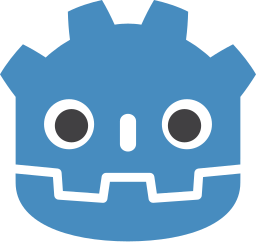
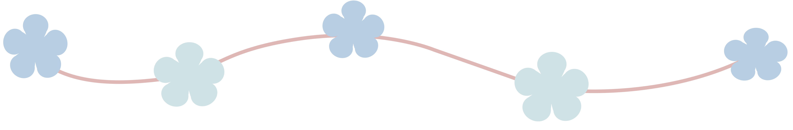

Technologies I Work With





I'm a game developer and software engineer who's passionate about UI/UX, creative interaction design, and crafting maintable systems.

I'm a current Master's of Computer Science student at UC San Diego. I just graduated summa cum laude at UCSC with a bachelor's in Computer Science: Game Design. I enjoy building games using engines like Unity and Godot, or just some plain Javascript. My most recent (ongoing) project is available to wishlist here on Steam! I have experience in full-stack web development, leveraging technologies such as Angular and Firebase, asset creation with Blender, and game development using Unity.
A happy home for your real case study pictures, project details, and the behind-the-scenes story.

